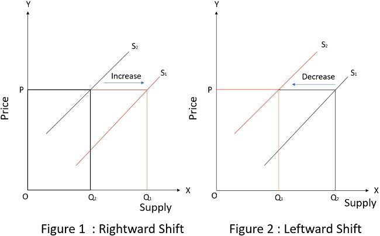

Main Page
Main Page  ICT
ICT  AP
AP Supply

https://www.shutterstock.com/image-photo/vibrant-street-market-stall-brimming-260nw-2484533523.jpg
Ang supply ay tumutukoy sa dami ng produkto o serbisyo na kaya at handang ipagbili ng prodyuser sa isang takdang panahon sa iba't ibang presyo.
Isinasaad ng Batas ng Supply na ang presyo at supply ay may positibong ugnayan. Kapag mas mataas ang presyo, mas tumataas din ang supply sapagkat mas malaki ang maaaring kitain ng mga supplier.
Supply Schedule
Ang supply schedule ay talaan ng quantity supplied sa magkakaibang presyo.

https://mrbrockrocks.weebly.com/uploads/1/1/6/8/11685418/8838749_orig.png
Supply Curve
Ito ay isang graph o dayagram na nagpapakita ng ugnayan ng presyo at quantity supplied.

https://enotesworld.com/wp-content/uploads/2020/08/Screenshot-701.png
Ang demand curve ay maaaring lumipat at magbago.
https://theinvestorsbook.com/wp-content/uploads/2020/09/shift-in-supply-curve-.jpg
Supply Function
Ito ay Matematikong pagpapakita ng ugnayan ng presyo at quantity supplied.
Qs = -c + dp
- Qs = Quantity supplied (dependent variable)
- c = y-intercept
- d = slope
- p = presyo (independent variable)
Mga Salik na Nakaaapekto sa Supply
- Mga Pagbabago sa Teknolohiya
- Ang mga bagong teknolohiya ay nakatutulong sa pagpapabilis ng produksyon at pagpapababa ng gastos, kung kaya't nahihikayat ang mga supplier na dagdagan ang supply.
- Pagbabago sa Halaga ng mga Salik ng Produksyon
- Kapag tumaas ang presyo ng anumang salik ng produksyon (lupa, paggawa, kapital, entreprenyurship) ay bumababa ang handa at kayang ipagbili na produkto ng mga prodyuser.
- Pagbabago sa Dami ng Nagtitinda
- Para itong bandwagon effect sa demand. Nahihikayat ang mga prodyuser na dagdagan ang supply ng kung ano ang uso at mabenta.
- Pagbabago sa Presyo ng Kaugnay na Produkto
- Nakaaapekto ang presyo ng kaugnay na produkto sa quantity supplied.
- Ekspektasyo sa Presyo
- Kapag inaasahan ng prodyuser na tataas ang presyo ng produkto sa malapit na hinaharap, maaring magdulot ito ng hoarding o pagtatago ng produkto upang maibenta ito nang mas mahal sa hinaharap. Ang hoarding ay nagdudulot ng pansamantalang pagbaba ng quantity supplied.